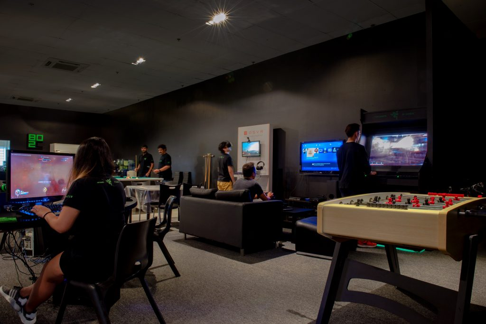

Posts #1
Jogo é toda e qualquer atividade em que exista a figura do jogador (como indivíduo praticante) e regras que podem ser para ambiente restrito ou livre. Geralmente os jogos têm poucas regras e estas tendem a ser simples. Sua presença é importante em vários aspectos, entre eles a regra define o início e fim do jogo. Pode envolver dois ou mais jogando entre si como adversários ou cooperativamente com grupos de adversários. É importante que um jogo tenha adversários interagindo e como resultado de interação exista um vencedor e um perdedor. Jogo é um termo do latim, "jocus", que significa brincadeira, divertimento.